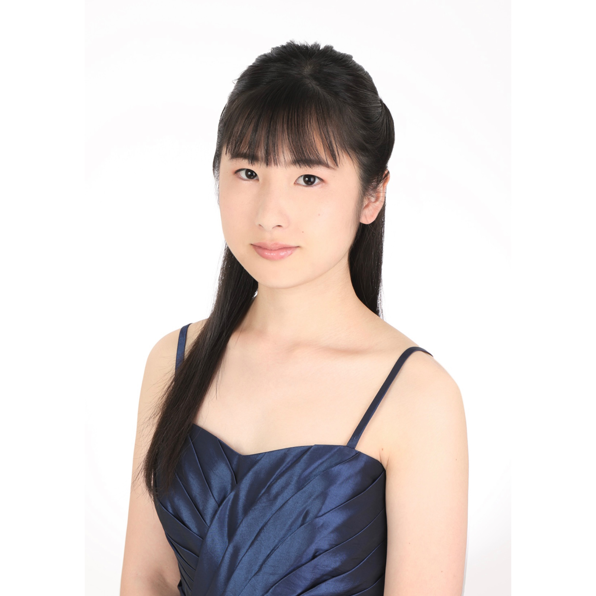

講師プロフィール

久保川 悠
(くぼかわ はるか)
経歴
4歳よりピアノを始める。現在、京都教育大学教育学部音楽領域専攻4年。昭和音楽大学ピアノアートアカデミー研究コース在籍。2025年度公益財団法人藤澤記念財団音楽奨学生
これまでに、ショパン国際ピアノコンクール in ASIA コンチェルトB部門全国大会奨励賞受賞・アジア大会進出、日本クラシック音楽コンクール 大学女子の部全国大会入選、日本バッハコンクール 一般Aの部全国大会奨励賞など、多数のコンクールで入賞。また、ピティナ・ピアノコンペティション 連弾上級本選入選、グランディール音楽コンクール 連弾C部門全国大会優秀賞を受賞。
演奏活動にも積極的に取り組み、秋吉台ミュージックアカデミー2023 受講、くるめ新人演奏会、TIAA全日本クラシック音楽コンサート に出演。その他、各種演奏会への出演やコンクールの伴奏なども務める。